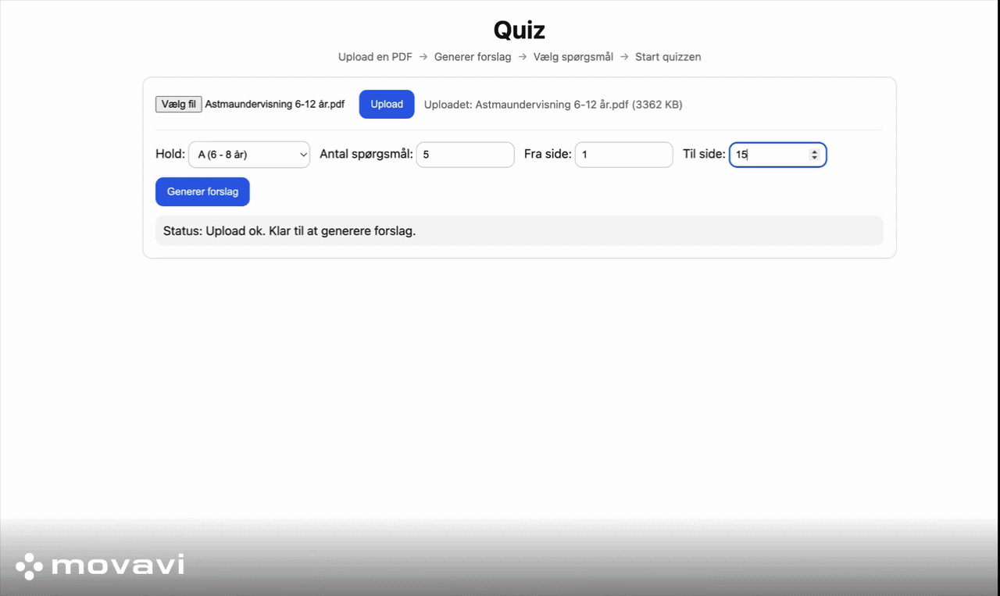
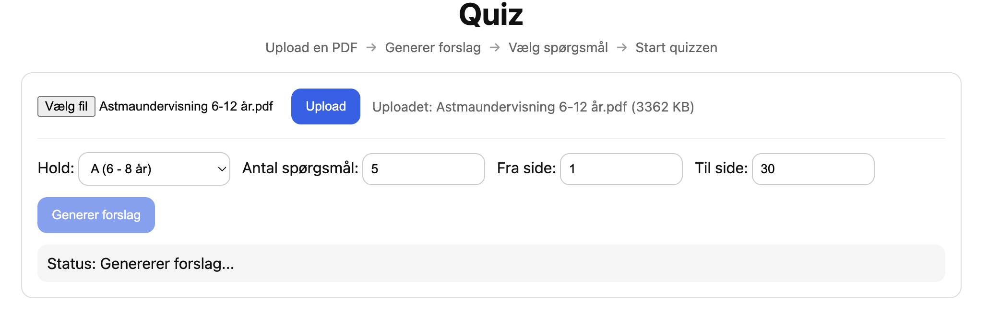
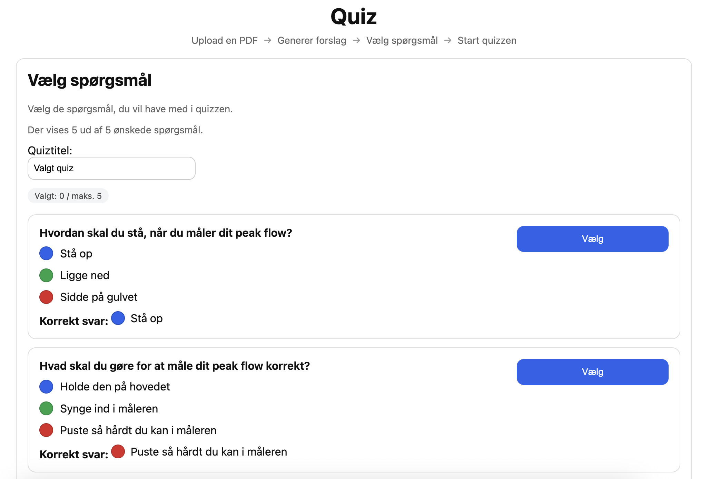
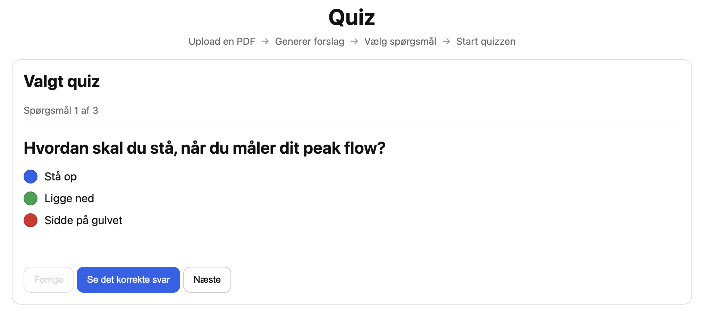
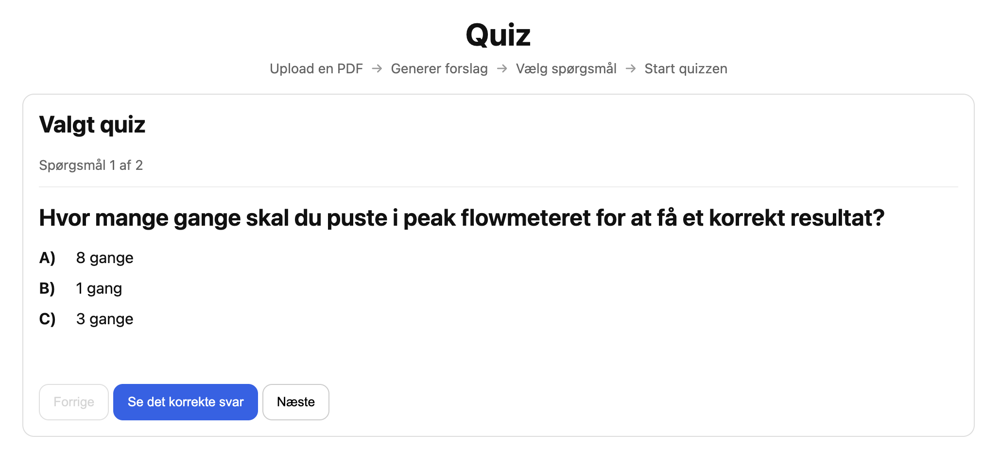

QuizGen
QuizGen is a proof-of-concept web system developed as part of the master thesis AI Generated Quizzes. The system generates multiple-choice quiz candidates from PDF-based teaching material using a local large language model, while keeping teachers in control of selecting and validating the final quiz questions.

About the project
QuizGen was developed to explore how a local LLM-based system can support teachers in preparing multiple-choice quiz exercises from PDF-based teaching material. The system allows teachers to upload material, choose an age group and page range, generate quiz candidates, review the suggestions and select the final questions before starting the quiz.
The project was evaluated with teachers from the Asthma School for Children and Adolescents. The focus was not to fully automate quiz creation, but to support preparation while keeping teacher judgment and validation as an important part of the workflow.
My contribution
- Implemented the full software prototype
- Built the HTML and JavaScript frontend
- Developed the FastAPI backend and API endpoints
- Implemented PDF text extraction and OCR fallback
- Built the quiz generation pipeline using Ollama and a local LLM
- Worked with prompt structure, age adaptation, validation logic and review flow
Highlights




